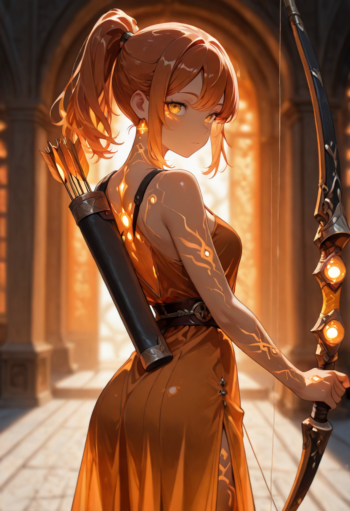
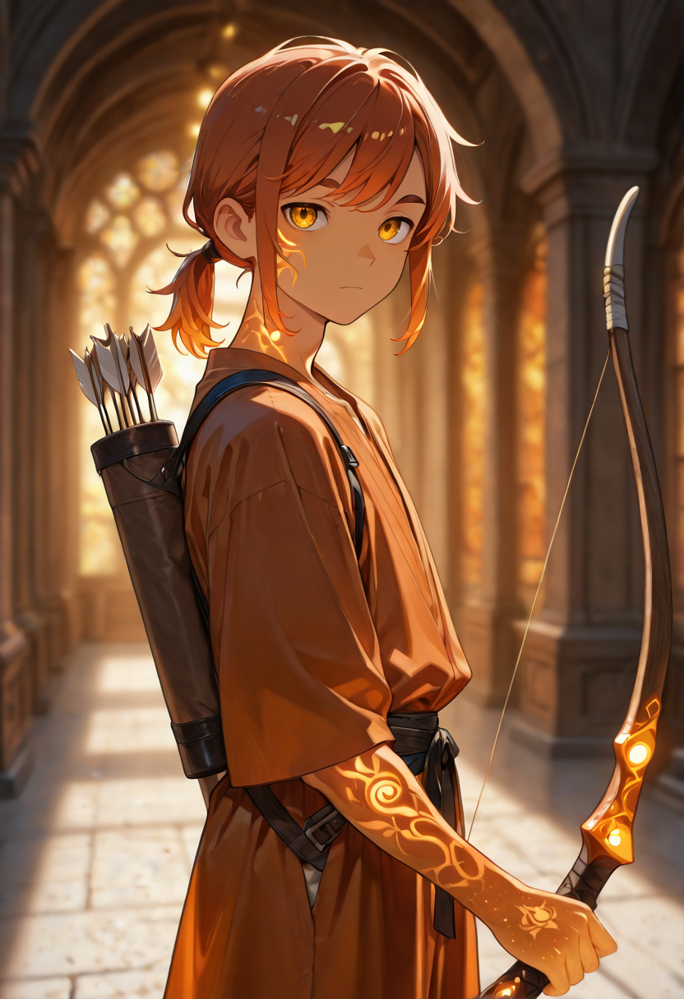

Wood, String, Consequence
The Archers of the Sentinelle are not glamorous. They were, in life, forest hunters: people who fed families through patient observation and the willingness to hold still while something died. They did not think of themselves as warriors, and they still do not. They think of themselves as problem-solvers with a specific skill set, and the problem on the battlefield is usually the same as the problem in the forest , something needs to stop moving, and they are the accurate way to make that happen.
The transition to military use required only a change of target. The patience, the stillness, the ability to calculate for wind and distance and the particular way a moving body distributes weight , all of this transferred directly. What also transferred was the complete absence of drama about it. The Archers do not celebrate. They note whether the shot was clean and prepare the next one.
They are the entry point of the Sentinelle's precision line. The Marksman and the Elf Sniper are refinements on what the Archer already does; the Archer is the foundation , the proof that the Sentinelle's logic works at its most basic level. Steady, patient, and accurate enough to make the Custodians' protection of the position worthwhile.
Tactical Data
Sharp Arrow
BaseDouble Shot
ActivePrecise Aim
PassiveGallery